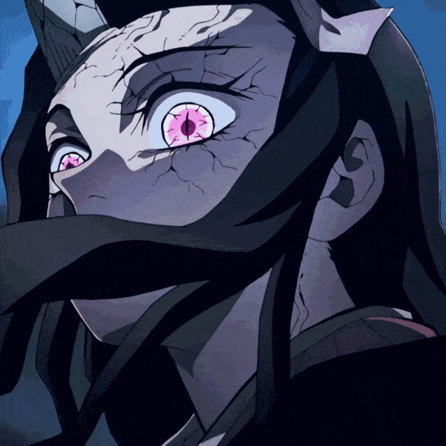
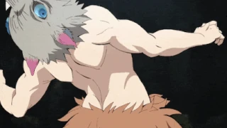

Demon Slayer – Fontosabb szereplők
Tanjiro Kamado

Tanjiro a történet főhőse, aki kedvességéről, kitartásáról és együttérzéséről ismert. Célja, hogy visszaváltoztassa démonná vált húgát, Nezukót. Kemény edzésen megy keresztül, és vízalapú kardstílust használ, később pedig elsajátítja a Nap Légzését is.
Nezuko Kamado

Tanjiro húga, aki egy démon támadás túlélőjeként maga is démonná változott. Mégis megőrzi emberi érzelmeinek egy részét, és minden erejével segíti testvérét. Bár nem beszél, ereje hihetetlen, és különleges képességei vannak, mint a lángoló vér technikája.
Zenitsu Agatsuma

Zenitsu először gyávának és bizonytalannak tűnik, de amikor elalszik vagy sokkos állapotba kerül, elképesztő erőre tesz szert. Villámalapú légzéstechnikát használ, és rendkívül gyors. Humoros, de a fejlődése lenyűgöző.
Inosuke Hashibira

Inosuke vad természetű, aki egy vaddisznófej maszkot visel. Az erdőben nőtt fel, így ösztönei és érzékei rendkívül kifinomultak. A Fenevad Légzés technikát használja, amely agresszív és kiszámíthatatlan harcmodort eredményez.
Giyu Tomioka

Giyu a Víz Hashira, egy higgadt és komoly démonölő. Ő az, aki először találkozik Tanjiroval és Nezukóval, és végül úgy dönt, hogy esélyt ad nekik és nem öli meg nezukót. Harcstílusa gyors, tiszta és precíz.
Kyojuro Rengoku

A Láng Hashira, akinek hatalmas szíve és lelkesedése inspiráló mindenki számára. Rengoku a hősiesség, elszántság és becsület megtestesítője, és fontos szerepet játszik Tanjiro fejlődésében. A tűz légzés használója.
Shinobu Kocho

A Rovar Hashira, aki nem rendelkezik elég fizikai erővel ahhoz, hogy levágja a démonok fejét, ezért mérgekkel és gyors, tűszerű támadásokkal győzi le őket. Kedvesnek tűnik, de sötét és fájdalmas múlt van mögötte.
Készítette:Farkas Péter